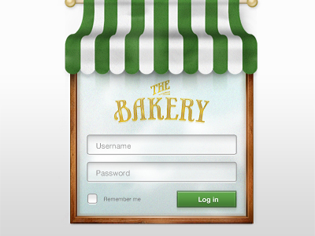
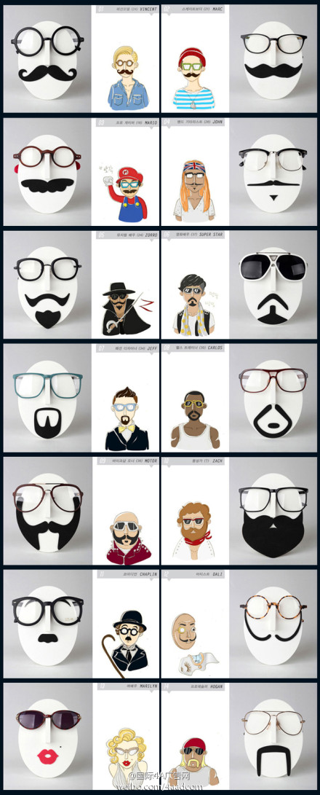

jquery select框应用jquery ui滑块slider制作日期时间进度条

jQuery日期选择器插件自定义多种日期选择

js图片浮动广告随屏幕滚动浮动广告图片
js图片特效制作js焦点图上下滚动slider切换效果
js文字切换特效制作焦点文字带滤镜切换效果
js lazyload实现网页图片延迟加载特效
js checkbox全选 反选 取消全部设置表单checkbox复选框勾选
js文字特效制作js文字闪烁与文字变色效果
js文字滚动插件制作双行关联向上文字间隙滚动